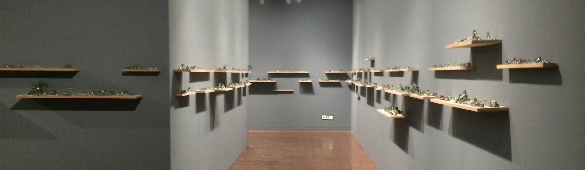

미디어시티서울 2014
SeMA, Seoul Museum of Art
2014. 09. 02 - 2014.11.23
SeMA, Seoul Museum of Art
2014. 09. 02 - 2014.11.23
SeMA 비엔날레 [미디어시티서울]은 서울시립미술관이 주최하는 미디어 아트 중심의 국제 비엔날레이다. 서울시립미술관이 주최하는 공공 행사이며, 현대미술 중에서도 특히 미디어아트를 중점적으로 다룬다. 광주 비엔날레, 부산 비엔날레와 함께 한국 3대 비엔날레로 불리기도 한다. 2000년도 1회 개막 당시 공식 행사 명칭은 미디어_시티 서울(영문: media_city seoul)이었다. 1회 총감독 송미숙은 이 명칭의 "미디어"는 "의사소통의 수단이자 매체"이자 "예술의 표현 매체"라는 뜻에 더해, 동북아시아의 전략 허브이자 다리로서의 서울을 가리키기도 하며, 나아가 미디어 아트와 연관된 미디어 테크놀로지 등을 복합적으로 가리킨다고 썼다. [미디어시티서울] 2014는 ‘귀신 간첩 할머니’라는 제목으로, 설치미술가이자 영화 [만신]의 감독이기도 한 박찬경씨가 예술감독을 맡아, 이전 비엔날레와는 다르게 뉴미디어아트의 기술보다는 강한 주제전에 중점을 두고 있다. 올해엔 17개국 42명(팀)의 국내외 작가들과 54명(팀)의 감독이 만든 42편의 영화를 통해, 일반적으로 통용되는 ‘아시아’에 대한 고정관념을 과감히 떨쳐버린다.
왜 ‘귀신 간첩 할머니’ 인가?
[미디어시티서울] 2014는 ‘아시아’를 화두로 삼고 있다. 아시아는 강렬한 식민과 냉전의 경험, 급속한 경제성장과 사회적 급변을 공유해 왔지만, 이를 본격적인 전시의 주제로 삼는 경우는 흔치 않았다. 이번 전시는 ‘귀신, 간첩, 할머니’라는 키워드를 통해, 현대 아시아를 차분히 돌아보는 자리가 될 것이다. 귀신은 아시아의 잊혀진 역사와 전통을, 간첩은 냉전의 기억을, 할머니는 ‘여성과 시간’을 지시하는 상징적인 단어들이다. 그러나 출품작은 이러한 주제를 훌쩍 넘어서기도 하고 비껴가기도 하는 풍부한 가능성의 상태로 관객 앞에 놓여 있다. ‘귀신 간첩 할머니’는 아시아로 여행하는 세 개의 산책길이기도 하고, 전시를 흥미롭게 감상할 수 있도록 도와주는 렌즈와도 같다.